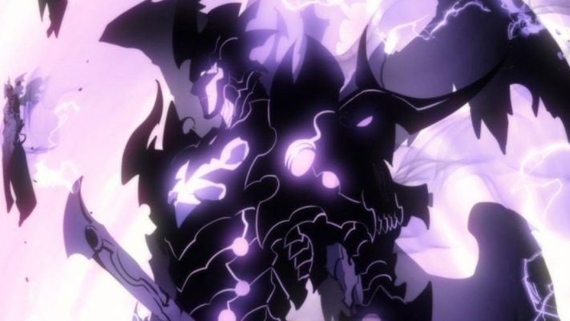

Sung

Como Sung Jin Woo ficou tão forte?
O misterioso Sistema permitiu que Jin-Woo subisse de nível sem limites e aumentasse sua força, ao contrário de todos os caçadores, que são incapazes de aumentar sua força a menos que sejam despertados.
Quem é a esposa de Sung Jin Woo?
Solo Leveling: Quem é a Esposa de Sung Jin-Woo? | Gamefera
O relacionamento de Jin-Woo e Hae-In começa a tomar forma quando ela revela seus sentimentos pelo protagonista. Hae-In, frequentemente envergonhada na presença de Jin-Woo, demonstra uma afeição crescente por ele. Isso é evidenciado quando ela o convida para se juntar à sua guilda, sinalizando um interesse romântico.24 de jan. de 2024
autor de solo Leveling
Webtoon
Escrito por ChugongIlustrado por Dubu (Redice Studio) Websites de publicação KakaoPageRevistas lusófonas NewPOP
.gif) Solo Leveling
Sombras
Solo Leveling
Sombras
As melhores Sombras

05. Kaisel: Primeiro, vamos falar desse poderoso dragão que nosso querido herói conquistou após derrotar o Baran no Castelo Demoníaco. Dessa forma, Kaisel sempre foi usado como montaria pelo seu antecessor e aparentemente nosso Sung Jin Woo também mantém essa mesma função para a criatura. Mas não se enganem, pois ele com toda certeza é extremamente poderoso e uma das melhores sombras dele.

04. Greed: Já aqui vamos falar de uma sombra que não foi tão usada assim na obra e nem tem tanto destaque. Na realidade, outras sombras como Fang ou o Iron tem mais destaque do que o Greed. Porém, vale lembrar que Greed era originalmente um caçador de Rank S! Enfim, vale lembrar que ele torturou nosso querido Jinho, mas após virar uma sombra se mostra muito humilde e fiel.

Já abrindo nosso top 3, vamos falar de um dos mais poderosos de todos. Aliás, foi um dos primeiros inimigos mais fortes que Sung já enfrentou, na missão de mudar de classe. De todo modo, ao virar uma sombra ele sempre se mostrou muito leal ao protagonista, mesmo sendo mais forte do que ele no início. Com toda certeza é uma das principais armas de Sung Jin Woo.

Já aqui, vemos o Rei Formiga, onde ganhou muito destaque e principalmente se mostrou muito poderoso na missão da Ilha Jeju. Aliás, ele era um boss de Rank S e derrotou vários caçadores desse rank com muita facilidade. Porém, a essa altura do Webtoon, nosso herói já era extremamente poderoso e conseguiu derrotar o Beru com certa facilidade. Agora, ele é de longe o top 2 do exército das sombras.

E por fim, vamos falar da sombra mais recente e com toda certeza o mais poderoso de todos. Originalmente, ele era servo de Ashborn. Então, com toda certeza é um dos mais experiente e poderosos, onde passou a servir o Sung Jin Woo sem questionar, pois é um servo muito leal. Aliás, vale destacar que ele é tão poderoso que conseguiu derrotar o Beru com muita facilidade!